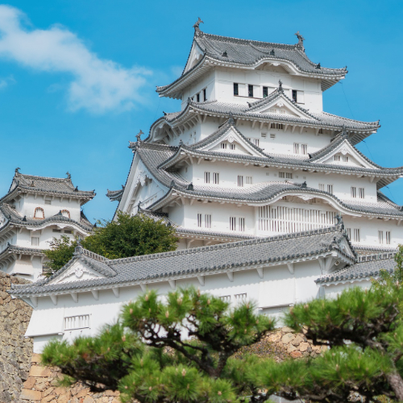

Himeji Castle – Japan’s White Heron Castle & UNESCO World Heritage
Himeji Castle (姫路城), often called the “White Heron Castle” due to its brilliant white facade, is one of the most beautifully preserved castles in Japan. Located in Hyōgo Prefecture, its elegant silhouette against cherry blossoms makes it a favourite for photographers and history lovers alike.
A Feudal Masterpiece with Centuries of History
Originally constructed in the 14th century, Himeji Castle played a pivotal role during Japan’s warring states period. Its complex of buildings, defensive gates, and labyrinthine corridors reflect strategic military architecture. The current structure survived through drone attacks, war, and natural disasters, thanks to careful restoration and preservation.
Stunning Architecture & Seasonal Beauty
Known for its five-tiered keep, multiple baileys, and extensive moats, Himeji Castle provides breathtaking views especially during spring cherry blossoming and autumn foliage. Wander its castle grounds and gardens to catch views that look straight out of a Japanese painting.
Visitor Information
- 🌸 Location: Himeji, Hyōgo Prefecture, Japan
- 🌸 Hours: 9:00 AM – 5:00 PM (last entry 4:00 PM)
- 🌸 Admission: ¥1,000 for adults
- 🌸 Access: About 1 hour on the Shinkansen from Osaka or 3 hours from Tokyo
Why Himeji Castle Should Be on Your Bucket List
Whether you’re interested in samurai history, traditional Japanese architecture, or simply looking for one of Japan’s most photogenic castles—Himeji Castle delivers on all counts. It’s a must-see for any Japan travel itinerary.
Tags: Himeji Castle, White Heron Castle, Japanese UNESCO castles, Hyōgo tourism, feudal history Japan, cherry blossom view, Japan castles
Planning to visit Himeji Castle?
To get the most immersive and insightful experience, we recommend booking a certified local private guide from our team. All our guides are licensed professionals officially recognized by the Japanese government, offering personalized tours tailored to your interests. Please contact your selected guide in advance to confirm availability and get expert assistance for your trip.